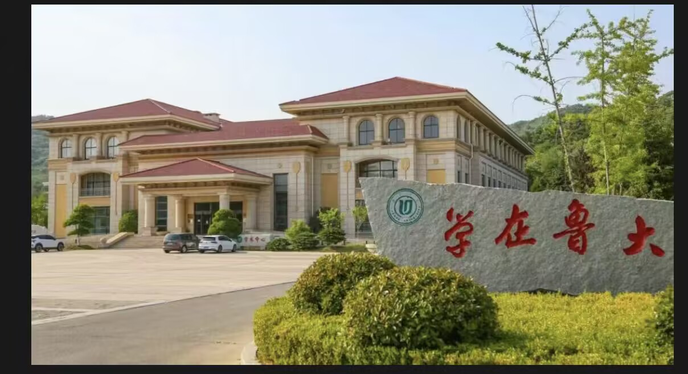
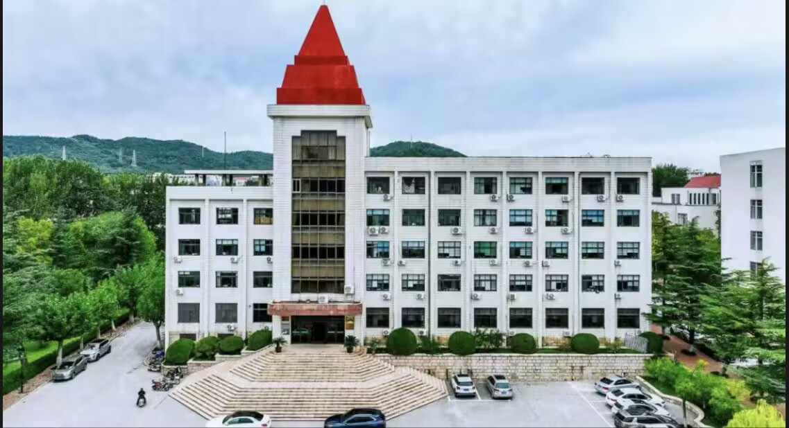

山海毓秀，烟霞润色，鲁东大学便栖于烟台这方海隅沃土，依山傍城，揽四季之景，蕴百年文心。
自 1930 年始，校脉绵延，从胶东公学到今日学府，“厚德、博学、日新、笃行” 的校训如清风，拂过校园的每一寸土地，
让山海之间的这片天地，既有草木的温润，更有文脉的厚重。
鲁大的园，是散落在芝罘间的四幅画卷，北校区为芯，东、南、蓬莱校区各展风姿，而最动人的，莫过于主校区依山而建的意趣。
拾阶而上，脚步轻碾着校史路的石板，700 米的长径从校友广场蜿蜒至黄金顶，一侧是校友园的葱茏，百树百花百草相拥，苹果、梨、樱桃树皆挂名而立，如万千校友遥寄相思，将对母校的惦念，凝作枝头上的岁岁春华；
一侧是乳子湖的清涟，湖水如镜，映着博物馆的白墙黛瓦，映着岸边的绿树荫浓，偶有清风掠过，湖面皱起细纹，便将天光云影揉成碎金，湖畔亭台闲立，是学子晨读的清隅，亦是暮时闲话的雅地。
白日里的鲁大，是知识与理想的交响。庄重的学术中心，见证了无数思想的碰撞；挺拔的钟楼主楼，以它沉默的姿态，守护着校园的秩序与尊严。
学子们穿行于楼宇之间，脚步匆匆，眼神坚定，他们将青春的理想写进密密的笔记，也写进了这片土地的记忆。
而当夜幕降临，图书馆的灯火便成了校园里最温暖的星河。那通宵不熄的灯光，与偶尔升起的孔明灯交相辉映，照亮了每一个为梦想奔赴的身影，也点燃了求知路上不灭的希望。
这里，不仅是学习的殿堂，更是精神的家园。从清晨归鸟的鸣叫，到傍晚湖上的清风；从图书馆内智慧的“超级舵手”，到博物馆里藏着历史故事的“闷骚说书人”，鲁大的每一处角落，都在无声地诉说着“学在鲁大”的初心。
在这里，古典诗词与现代生活相遇，学子们以笔为剑，以梦为马，传承着“独立天地间，清风洒兰雪”的气节。 鲁大的人文景观，是历史的沉淀，更是未来的序章。它藏在每一个鲁大人心中，成为他们生命里最宝贵的财富，指引着他们在人生的道路上，不断求索，勇往直前。

